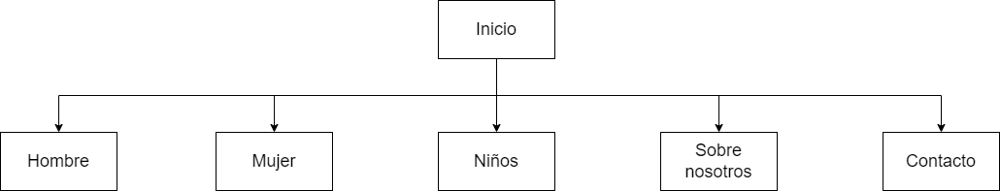

Presentación general del proyecto:
Objetivos del sitio del proyecto
- Promover la sostenibilidad
- Ofrecer variedad de producción
- Garantizar la calidad
- Transparencia y honestidad
- Experiencia de usuario
- Compromiso social
- servicio al cliente
- Conciencia y educación
- Innovación continua
- Impacto ambiental positivo
Concepto del sitio web
El concepto de un sitio web que vende zapatillas ecológicas se basa en
la idea de ofrecer un espacio en línea dedicado exclusivamente a la venta de calzado sostenible
y respetuoso con el medio ambiente:
El sitio web no solo vende zapatillas ecológicas, sino también se centra en
la educación, conciencia y responsabilidad social.
Es un lugar donde los consumidores pueden encontrar productos que no solo son estilosos y cómodos,
sino también respetuosos con el medio ambiente y éticamente producidos.
Atraer trafico al sitio
Para atraer tráfico de alta calidad a un sitio web que vende zapatillas ecológicas,
es esencial utilizar técnicas de marketing específicas para el nicho de la moda sostenible:
- Optimización para Motores de Búsqueda (SEO): Crea contenido informativo sobre sostenibilidad y moda ecológica para atraer tráfico a través de búsquedas informativas. Matchea las palabras buscadas por la gente en Google con las palabras incluidas en el sitio.
- Marketing de Contenido de Valor: Publicar artículos, guías de compra, reseñas de productos y noticias relacionadas con la sostenibilidad en la moda. Crear contenido de calidad que resalte los beneficios de las zapatillas ecológicas y su impacto positivo en el medio ambiente.
- Redes Sociales Especializadas: Utilizar plataformas de redes sociales como Instagram y Pinterest, que son populares entre los amantes de la moda y la sostenibilidad. Colabora con influencers y utiliza hashtags relevantes para llegar a un público más amplio.
- Email Marketing Personalizado: Crear un espacio de suscripción o newsletter para luego envía correos electrónicos personalizados con recomendaciones de productos, descuentos y noticias relacionadas con la sostenibilidad. Segmentar tu lista de correo para enviar contenido específico a diferentes segmentos de tu audiencia.
Para nuestro sitio web la autenticidad y el compromiso con la sostenibilidad son cruciales. Comunicar claramente tu compromiso con el medio ambiente y la calidad de tus productos es esencial para atraer a una audiencia comprometida con la moda ecológica.
Público Objetivo:
EcoStep apunta a aquellas personas jóvenes como adultos que se preocupan en el medio ambiente, aficionados de las zapatillas y la moda. Ya que EcoStep no solo busca mostrarse como una marca sustentable, sino que tiene como objetivo involucrarse en la moda de los jóvenes/adultos.
Las características de nuestro público objetivo son:
- Edad: 20 a 35 años
- Sexo: Masculina, Femenino y Unisex
- Aficiones: El medio ambiente, la moda, los animales, las zapatillas
- Inquietudes: Dificultad en encontrar zapatillas que se preocupen por la salud de las plantas como animales, con el objetivo de no consumir las grandes marcas explotadoras.
- Nacionalidad: Argentina
- Poder adquisitivo: Clase Media/Alta
EcoStep brinda comodidad y sustentabilidad para todos los días. La persona que consume productos de EcoStep, es una persona que sigue la moda básica, ya que apuntamos a la comodidad y no al deporte. Este publico objetivo, se destaca por el uso de colores básicos como el: negro, blanco, beige, verde, azul, rojo y marrón.
Identidad Visual:
Logo: En desarrollo
Se desea transmitir la imagen de una marca dedicada al cuidad del medio ambiente pero que a la vez produsca calzado que sea util y comodo para ser usado de forma diaria por cualquier persona
Descripción del sitio web:

Hacer click en este texto para ir a la carpeta del proyecto en Github
Prototipado:
Hacer click en este texto para ir al Figma del sitio
Rol de cada integrante:
- Diseñador UX/UI: Tobias Bermudez y Enzo Falivelli
- Maquetador: Tobias Bermudez y Leandro Bessone
- Programador: Leandro Bessone
- Comunicador Web: Enzo Falivelli